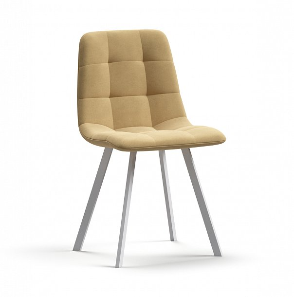

 НОРД велюр Velutto Бежевый, Белый Описание товара Премиальный велюр стула Норд, эффектно сочетается с белыми ножками.
Металлический каркас обеспечивает долговечность и надежность конструкции даже при больших нагрузках, а эргономичная
форма сиденья и спинки поддерживает удобное положение тела и создает комфорт. Модель подходит для оформления столовой,
кухни или гостиной, а также кафе, конференц-залов и приемных. Элегантная прострочка на посадочной части украшает внешний
вид дивана и дает возможность сохранить обивку от растяжения. 9 999 рубХарактеристики товара: